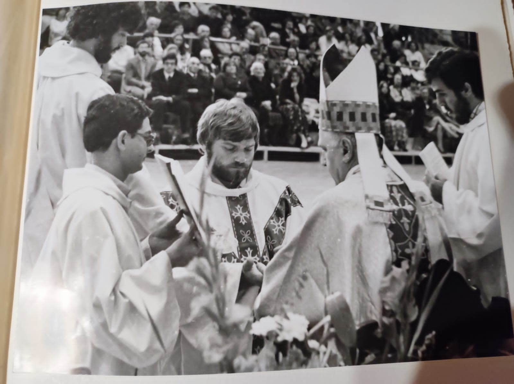
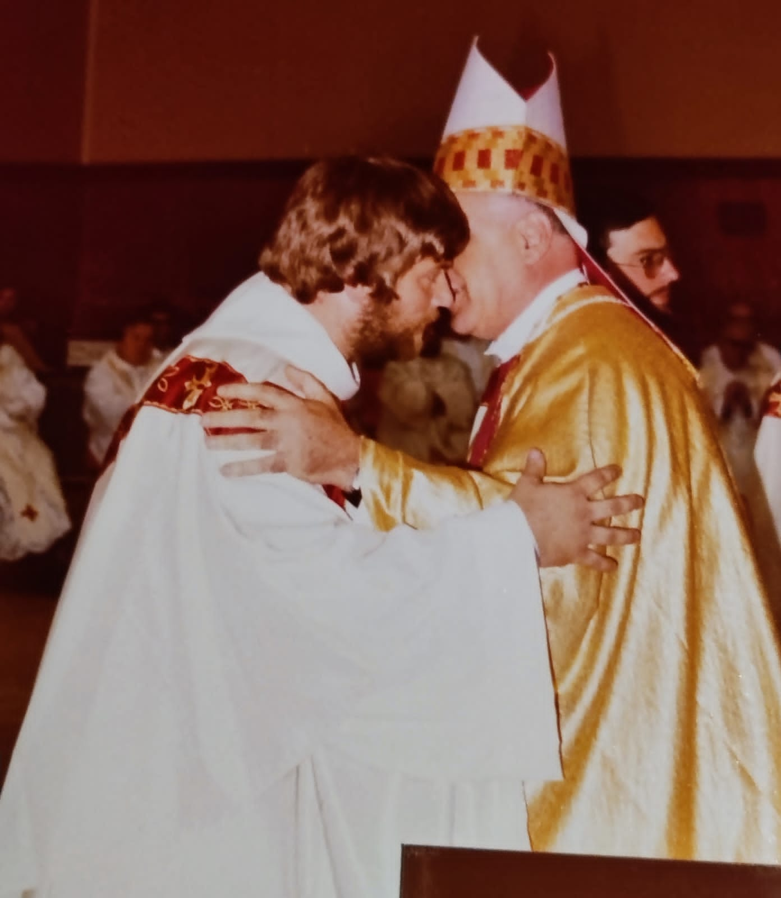
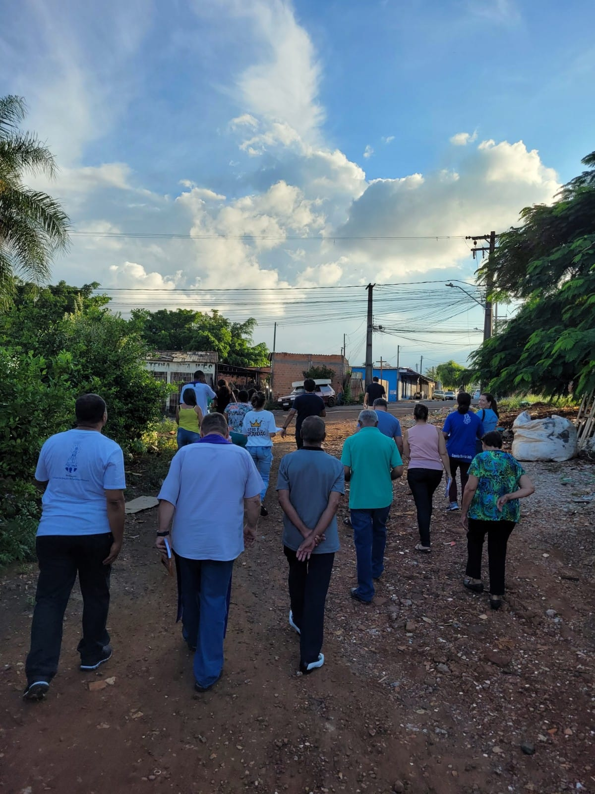
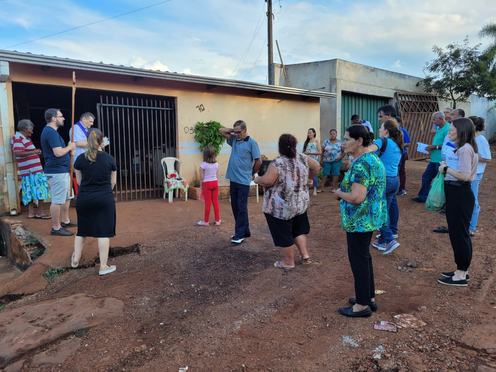
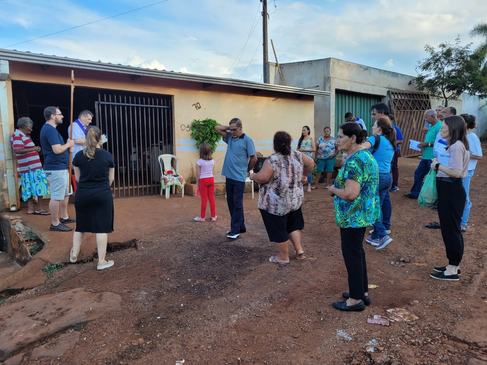
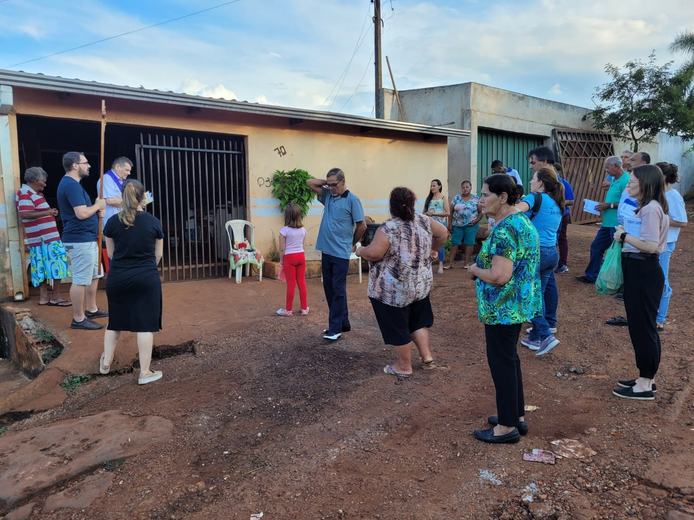

Missionarios Xaverianos
Missão
Quem Sou Eu
Mundo Xaveriano
Contatos
Missão

"Ordenação Sacerdotal" no Ginásio de Esportes de Parma, em 23/09/1979

Histórica e Maravilhosa "Via Sacra na Favela" em 07/04/23
Caminho Sagrado


 
